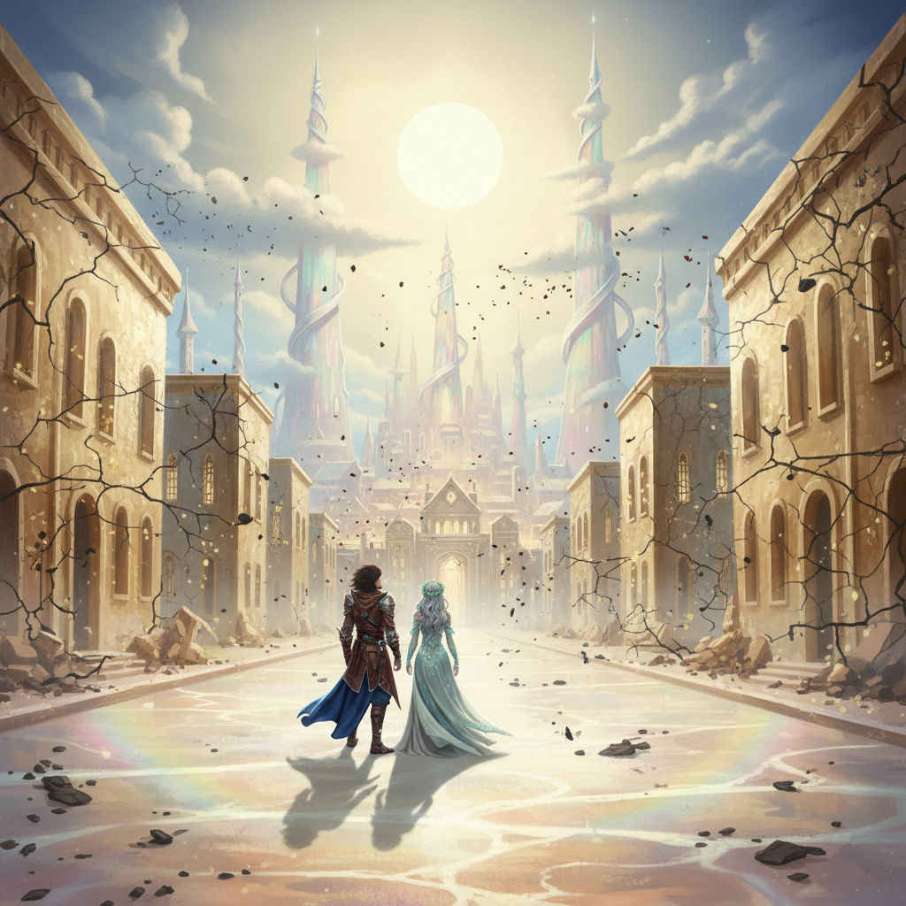
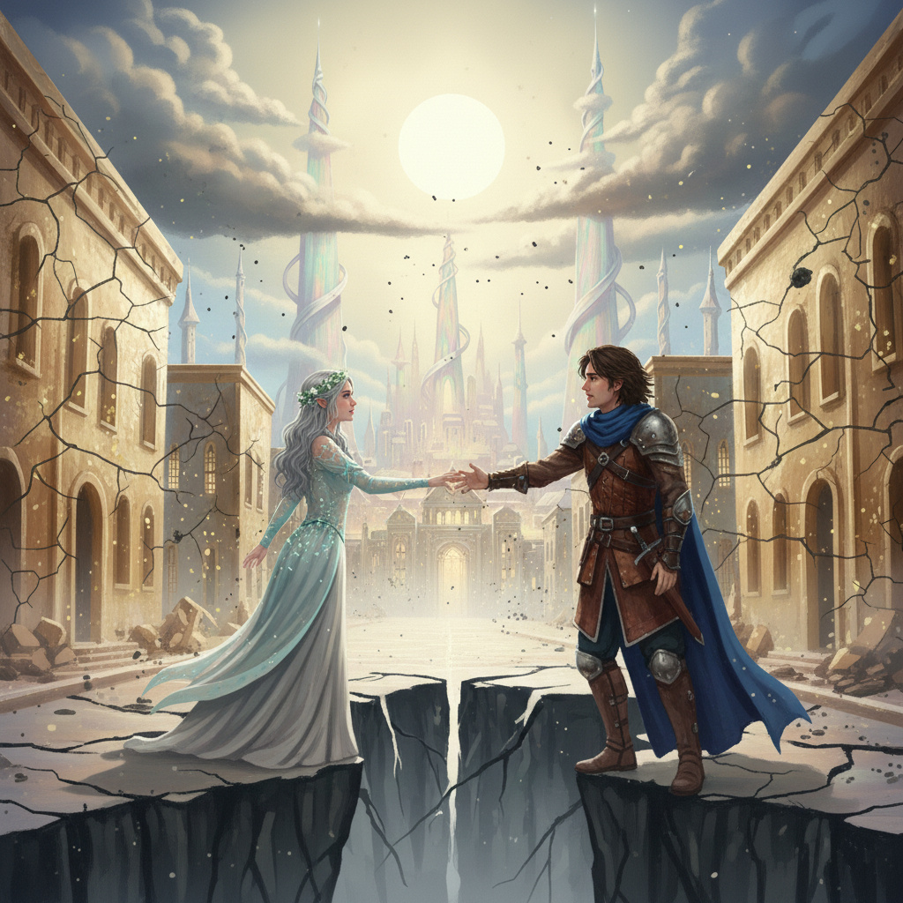
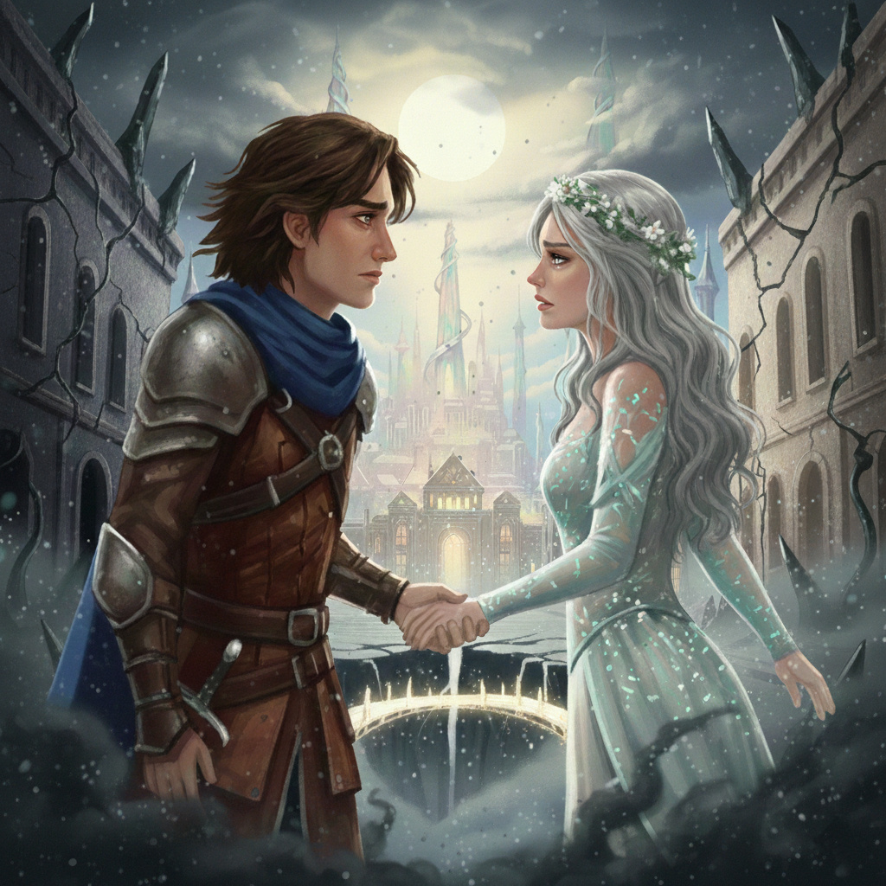
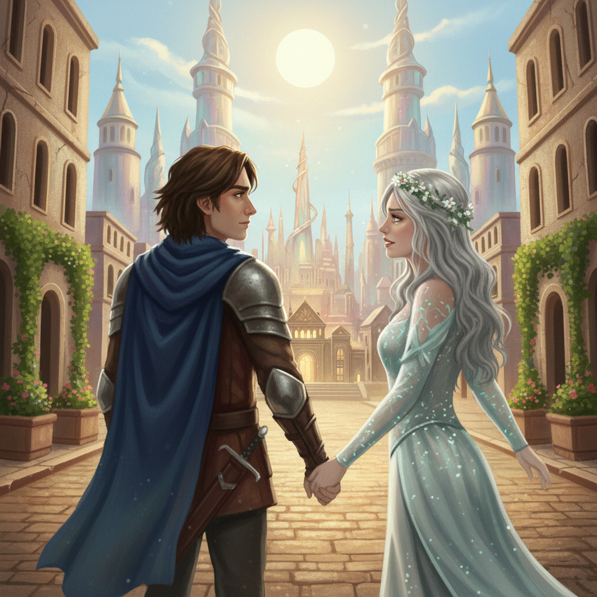

Tizenharmadik fejezet
Aetheria, a Lélek Tükörvárosa
Ajánlom egy kedves barátomnak, aki keresi a pillanatban rejlő örökkévalóságot, és mer hinni a szív órájának szavában.
Amikor kiléptek a Súlyos Percek Völgyéből, a lábuk alatt a szikla puha, fehéres párává változott, és előttük a semmiben egy város kezdett kikristályosodni. Aetheria nem kőből vagy fából épült, hanem tiszta fényből és érzelemből. A házak falai opálosan csillogtak, mintha folyékony gyöngyházból merítették volna őket, a tornyok pedig olyan valószínűtlenül magasra nyúltak, hogy a felhők koronázták meg azokat a csúcsaikat, melyek már-már érintették a csillagokat.

– Ez a város mi vagyunk – suttogta Honóra, ahogy beléptek az első sugárútra. A hangja úgy csengett, mint a kristály. – Nézd a falakat! Amikor rád nézek és hálát érzek, a kövek aranyfényben úsznak.
Alerion elcsodálkozott: amerre mentek, a terek kitárultak, a kertekben hirtelen virágok pattantak ki a semmiből – nektártól nehéz kelyhükből lágy zümmögés áradt, mert a szívében béke honolt. A levegőnek is illata volt: a frissen hullott eső és az érett barack keveréke, az elégedettség aromája. Ám Aetheria csalóka hely. Nemcsak a fényt tükrözi, hanem a legmélyebben eltemetett kétségeket is, melyek mint a mélytengeri szörnyek, csak az alkalomra várnak, hogy a felszínre törjenek.
Ahogy haladtak a város központja felé, ahol a fény már-már vakító fehérséggé sűrűsödött, Alerionban felébredt egy régi, makacs gondolat. Egy apró, mérgező tüske, ami évek óta ott fészkelt a lelke peremén.
„Vajon meddig tarthat ez? Mi van, ha Honóra egyszer rájön, hogy én csak egy halandó lovag vagyok, aki elöregszik, miközben ő örökké ragyog? Mi történik, ha a testem elfárad, a kardom elnehezül, és csak egy teher maradok az ő örökkévalóságában?”
Abban a pillanatban a széles sugárút remegni kezdett, mint a megzavart víztükör. Az aranyfényű falakon hajszálvékony, sötét repedések futottak végig, mintha láthatatlan jég feszítené szét a kristályt. Aetheria egén a nap hirtelen elhalványult, színe a lángoló aranyból fakó, beteges sárgába fordult, és egy metsző, hideg szél söpört végig az utcákon, ami magával ragadta a virágok szirmait, fekete hamuvá égetve azokat a levegőben.
A környező épületek tükröződő felületein Alerion arca eltorzult. Már nem a dicső lovagot látta, hanem egy megfáradt árnyékot, akinek válla felett ott lebegett az idő kikerülhetetlen sötétsége. A város nem hazudott: pontosan azt a pusztulást modellezte le, amitől a férfi a legjobban rettegett.
– Alerion, mire gondolsz? – kérdezte Honóra riadtan. A hangja már nem csengő volt, hanem feszült, mert látta, hogy a lábuk alatt a talaj, amely addig puha páraként ringatózott, most hirtelen nehéz, ólomszürke kővé dermed. A lány hiába próbált a fénybe kapaszkodni, a környezetükből kiveszett a melegség.
A lovag nem tudott a szemébe nézni. Tekintete a lábai elé szegeződött, ahol a kövezet hideg nyirkossága már a csizmáján keresztül is égette a bőrét.
– Csak a jövőre... – ismerte el végül, de a hangja bizonytalanul bicsaklott meg, mint aki maga is fél a saját szavaitól. – Mi van, ha nem vagyok elég neked? Mi van, ha ez az egész utazás, minden kardcsapásom és minden áldozatom csak egy jelentéktelen pillanat a te mérhetetlen öröklétedben?
Aetheria válasza erre a vallomásra brutális és azonnali volt. A város szövete, amely addig a harmóniára épült, most fellázadt az idegen érzés, a kétség ellen. Egyetlen, gyomorig hatoló dörrenéssel a főtér kristályos talaja kettéhasadt. A repedés úgy cikázott végig a kövön, mint egy sötét villám, és mire feleszméltek, egy tátongó, feneketlen vákuum nyílt meg közöttük.
Az egyik oldalon maradt Alerion, ahol a város arca felismerhetetlenné torzult: a falakból fekete, obszidiánszerű tüskék nőttek ki, az utcákat pedig sűrű, fojtogató köd ülte meg, ami elnyelte a remény maradékát is. A túloldalon, a szakadék távoli peremén ott állt Honóra. Az ő oldala még mindig tündöklő volt, az épületek ott még őrizték az opálos fényt, de a kettőjük közötti távolság másodpercről másodpercre nőtt. Aetheria szó szerint elkezdte kettészakítani a valóságukat, fizikai formát adva a lovag önbizalomhiányának és a tündér értetlenségének.
– Ne hagyd, hogy a félelem építse a várost! – kiáltott át Honóra a tátongó mélység felett, miközben a szakadékból feltörő jeges huzat belekapott a hajába. Az alakja távolinak és elérhetetlennek tűnt, de a hangja áttörte a morajlást. – Az észre hallgass, Alerion! Logikusan: ha eddig veled jöttem, ha érted elhagytam az Időtlen Pillanatot és a halhatatlanok nyugalmát, miért tettem volna meg, ha nem lennél elég? Miért cseréltem volna el a mindenséget egyetlen pillanatért, ha az a pillanat nem te lennél?
Alerion a szakadék szélén állt, a mélységből feltörő sötét pára már a páncélját marta. Látta, ahogy a saját oldala, a saját kis szigete omladozni kezd, hatalmas kőtömbök zuhantak a semmibe, mert a belső világa romokban hevert. A lába alatt megremegett a perem, és a lovag a zuhanás szélén döbbent rá az igazságra: a város nem ellenség volt, ami el akarja választani őket, hanem egy kegyetlenül őszinte tanító.
Aetheria minden egyes repedéssel és dőlő toronnyal azt üzente: a bizonytalanság nemcsak érzés, hanem fal, amely elszigetel; a bizalom pedig nemcsak szó, hanem az egyetlen híd, amely képes áthidalni még az örökkévalóság és a mulandóság közötti tátongó űrt is.
– Igazad van – mondta Alerion, és behunyta a szemét, hogy ne lássa többé a tátongó mélységet, csak Honóra arcát őrizze meg maga előtt. Megfeszítette az akaratát, és megpróbálta elcsendesíteni a kételyeit, amelyek úgy mardosták a lelkét, mint a vadállatok. – A szeretet nem érdem, amit ki kell vívni, hanem választás, amit nap mint nap meg kell hozni. És én téged választalak, minden gyengeségemmel, minden mulandó percemmel együtt.
Ahogy kimondta ezeket a szavakat, a levegő megvibrált, és a szakadék mélyéről nem a halálos sötétség, hanem egy vakító, tiszta fehér fény tört elő, amely elűzte az árnyékokat. Aetheria épületei, amelyek addig merev és rideg kristályként törtek szét, most hajladozni kezdtek, mint a szélben táncoló nádszálak. A gravitáció törvényeit meghazudtolva a két távoli oldal lassú, méltóságteljes mozgással elindult egymás felé.
Nemcsak a szakadék zárult be, összeforrasztva a széthasadt talajt, hanem egy gyönyörű, áttetsző híd is épült a legmélyebb pont felett. A híd korlátjait finom mívű kristályszobrok díszítették: összefonódó kezeket és egymásba hajló alakokat ábrázoltak, talapzatukon pedig arany betűkkel ragyogott a város új törvénye: „Az egység nem a hasonlóságban, hanem a bizalomban rejlik.”
Aetheria újra ragyogott, de ebben a fényben már nem volt ott a korábbi, törékeny gőg. Most már másképp tündökölt: nemcsak a felhőtlen boldogságot tükrözte, hanem a közösen legyőzött válságot, a sebeket és az azokból fakadó erőt is. Az utcák szélesebbek és hívogatóbbak lettek, mint bármikor korábban, a kövezet pedig melegséget árasztott, mintha a város szíve alattuk lüktetne. A levegőben már nem a félelem fémes íze, hanem a stabilitás és a friss föld illata érződött.
– Látod? – suttogta Honóra, ahogy újra egymás mellé értek a híd közepén. Ujjai finoman végigsimítottak Alerion arcán, és a lovag érezte, hogy a lány érintése most valóságosabb, mint valaha. – Ebben a városban tanultuk meg a legfontosabbat: a világunkat mi építjük a gondolatainkkal és a döntéseinkkel. Ha belül rend van, kint sem dőlnek le a falak.
Alerion körülnézett, és végre nem egy lovagot látott a falak tükrében, hanem egy embert, aki képessé vált arra, hogy egy istennő méltó társa legyen – nem a kora vagy a hatalma, hanem a rendíthetetlen hite miatt.